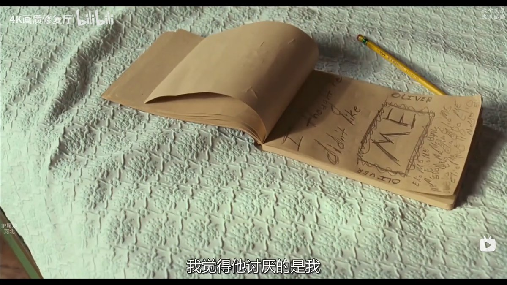

大家喜欢看这种男同。无非因为这里面有很多恋爱技巧。幻想自己也会被别人这么对待。被动地就可以谈上恋爱。至于恋爱后怎么办。他们没谈上恋爱之前是不会考虑这些的。觉得恋爱后的生活是自然而然就一帆风顺的事。
恋爱后不满意。或者受不了对方了。就分手换一个。
如果抱着这种心态看这部电影。那自然是极甜的。但是我看的时候只能想到自己恋爱后的各种不好的行为。
所以他们越利用技巧和偶然而不是长期的理解而在一起。我就越感觉痛苦。

恋爱后不满意。或者受不了对方了。就分手换一个。
如果抱着这种心态看这部电影。那自然是极甜的。但是我看的时候只能想到自己恋爱后的各种不好的行为。
所以他们越利用技巧和偶然而不是长期的理解而在一起。我就越感觉痛苦。

傻孩子。他讨厌你是因为你没有迎合他呀。你这么想，然后去迎合他，不是着了他的道了吗。
到时候“被”恋爱。不都是可以预见的。
也许我的错不是懂很多恋爱技巧。而是没有给爱情一个完美的句号——结婚。反而不断给它增加裂痕。 https://t.co/hhTawVrMho
到时候“被”恋爱。不都是可以预见的。
也许我的错不是懂很多恋爱技巧。而是没有给爱情一个完美的句号——结婚。反而不断给它增加裂痕。 https://t.co/hhTawVrMho